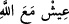
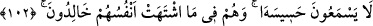
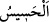

olacaklarına dâir müjdemiz erişmiş olanlardır. “İşte bunlar” yukarıda bahsedilen güzel
sıfatları taşıyanlar, “cehennemden uzak tutulurlar.” Çünkü onlar cennettedirler.
Onlarla cehennem arasında pek uzak bir mesâfe vardır. Çünkü cennet, yücelerin en
yücesinde, cehennem ise aşağıların en aşağısındadır.
Bahru’l-ulum’da şöyle der: “Başlangıçta ezelî inâyetin takdir edilmiş olması,
nihâyette velâyetin zuhûruna sebep olur. Ezelde gizlice ekilen tohum, ebed tarlasında,
yâni bu dünyada âşikâr olarak biter.”
Büyüklerden birisi şöyle demiştir: “Seçkin kullara ezelde bahşedilen hüsn-i inâyetin
zâhiri şu dört şeydir: İki dünyadan ayrılmak, Allah ile buluşmayı iki cihana tercih
etmek. Allah ile yaşamayı
hürmet ve edeble sürdürmek, doğru ferasetler ve
açık kerametlerle kendilerinden Allah’ın kudretinin nurlarının görülmesi.
Seçkin kullara ezelde bahşedilen hüsn-i inâyetin bâtını şu dört şeydir: “Parlayan vecd
halleri (mevâcîd), gaybî ilimlerin açılması, ortaya çıkan mükâşefeler ve kâmil
ma‘rifetler.
İşte bu hususlar zâhir ve bâtını ile her yerde zâhir olur. Sâhibi de âfâkta/dış âlemde
sıddîkların vasıflarıyla, mukarreblerin (Allah’a yakın kılınan kimselerin) alâmetleriyle
ve Peygamberlerin Efendisi’nin hilâfeti ile meşhur olur.”
Bir başkası da şöyle demiştir: “el-Hüsnâ (güzel âkıbet)”, inâyet (ilâhî yardım), ihtiyâr
(seçme), hidâyet, atâ (ihsân) ve tevfîk demektir. İnâyetle kifâyet (Allah’ın kâfî olması)
meydana gelir. İhtiyar (Allah’ın seçmesiyle) riâyet (gözetme), hidâyetle velâyet, atâ ile
hikmet, tevfîk ile de istikamet hâsıl olur.”
Şeyh Sa’dî (k.s.) der ki:
Önce Allah kalbine istek verir
Sonra kul eşiğe baş koyar
“Benim fiilim amelim iyidir” diye niçin düşünüyorsun
O kapıdan bir bak bakalım, her şey Onun tevfîki iledir
Bahçıvan padişah köşküne, meyve götürür
İyi bak, o da padişahın bahçesindendir
102. Bunlar onun uğultusunu duymazlar; gönüllerinin dilediği nimetler içinde
ebedî kalırlar.
“Bunlar onun uğultusunu duymazlar;” “
” hissedilen ses demektir. Yâni onlar,
cehennemin sesini zayıf olarak bile duymazlar. Tıpkı sesi çok şiddetli olsa bile uzakta
olduğu zaman gür sesli kimsenin sesinin işitilmemesi gibi. Bu ifâdenin anlamı, ‘Onlar
cehennemin sâdece gizli olan sesini işitmezler’ demek değildir.